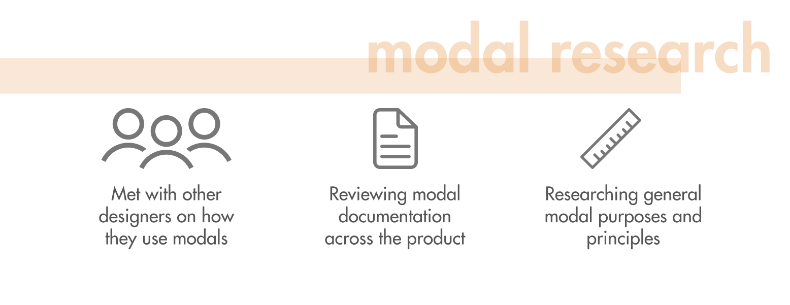
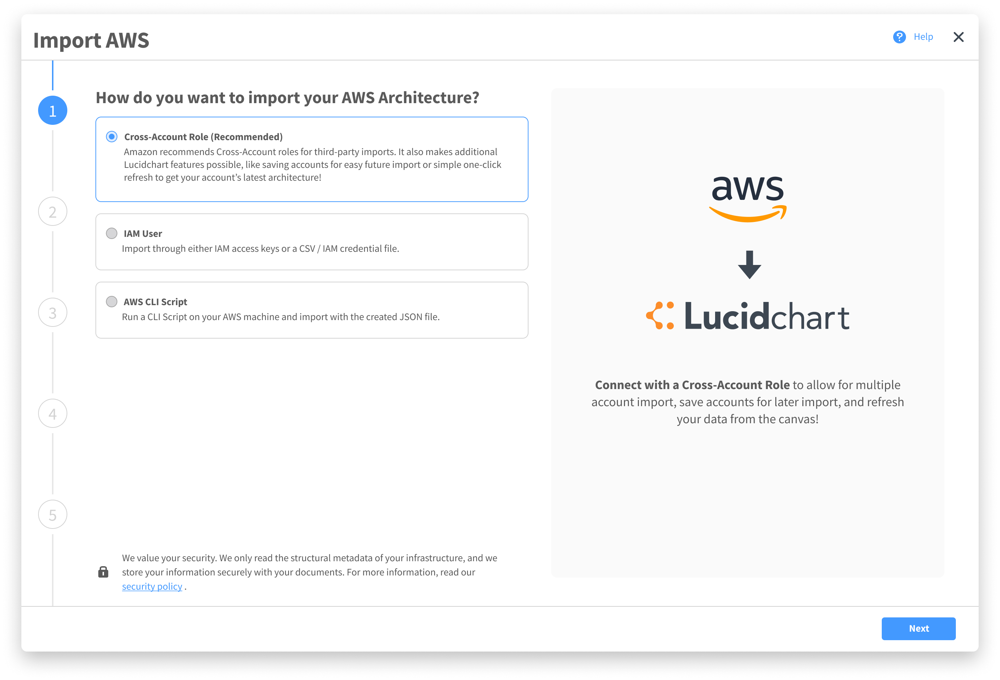

The User.
Cloud Engineers, Solution Architects, IT Directors.
The Timeframe.
15 weeks.
The Tools.
Figma.
The Role.
UX Designer.
For this project, I was responsible for designing the experience around the import of Amazon Web Services (AWS) cloud architectures into Lucidchart, ranging from how users import the architecture and how they can interact with the diagram on the canvas.
I was the sole designer on a scrum team working within a 2-week sprint cycle. My team consisted of myself, a product manager, five engineers, and a QA specialist.
THE PROBLEM
Cloud Engineers have to make enormously complex diagrams for numerous reasons, whether it’s communicating changes or for documentation purposes.

Lucidchart had just a barebones feature for importing architectures, but it was rarely used because it was hard to import the data correctly and even harder to manipulate it the way engineering wanted. Often times, engineers would end up deleting the imported architecture and remake it from scratch. Making a cloud architecture diagram was a pain and a nuisance no one looked forward to doing.
{kind=link}
We wanted to reshape the industry and change this perception entirely:
On starting this project, I took stock of what was already done and strategized my plan for designing this experience.
This process led to the first version of Lucidchart’s CloudInsights, which now has seven teams dedicated to its success. It also led to two new components in Lucid’s design system, components primarily focused for complex data-diagrams and scaled into other integrations such as Salesforce or bambooHR integrations.


BREAKDOWN
IDENTIFYING THE PROBLEM
I first wanted to understand the problems with our primary users, hoping to understand the higher-level problems and motivations, while identifying key pain points in a DevOps personas job. Through this stage I conducted three types of research:
I collated all this information in a document and conducted affinity diagramming to identify key pain points, user motivations, goals, frustrations, responsibilities, and current processes. From this I could develop personas and also locate problem points in a cloud architect’s job:
Multiple Programs for Management
Users often use 3-4 programs to manage architecture. Some to document it, some to manage costs, some for simulating changes, some for current status.
"Hacky" Methods
When diagramming their architecture, Users using “hacky” methods, especially for multiple accounts. Often times they’ll create multiple different objects and overlap them to create the look of a single architecture.
Long and Tedious
Cloud Architecture can be huge, extending to thousands of objects. Creating one from scratch or manually correcting one can take hours.
Repetitive
Every time a change is made to the architecture, a diagram must be updated and new documentation must be generated.
Hard to Communicate Data-Heavy Information to a Specific Audience.
As well as creating a full picture of the architecture, architects must also create views to communicate changes to both engineers and directors, each with different goals.
Limited Functionality
The current implementation was barebones, having only the ability to put one account’s architecture on the canvas with little to none extra ability.
ARCHITECTURE CRASH COURSE
Hitting the ground, I had no idea how an AWS architecture worked. I was pretty lost in this extremely complicated world. So here's a short crash course as how I understood it.
To design for architecture diagrams, I had to first understand them. While conducting research, I also independently learned about AWS architectures and how they were structured.
In short, clouds provide multiple services ranging from computing servers, deployment services, traffic distribution, and more. An entire system, from the moment a user enters a website and finally completes their goal, can exist on the cloud.
Cloud architectures are structured in a certain way, with some elements only allowed to live in some objects. For example, an EC2 must exist in a subnet, which exists in an availability zone, which is in a VPC, which is in a region. However, there are hundreds of different types of instances and each has their own special rules. Don’t worry, I hate it too.

DEVOPS PERSONAS?
Anyways, back to synthesizing research I generated three personas, two who were primary users and one who was secondary. These personas were posted up at every table in the scrum team to ensure we were focused on our user.

The Cloud Engineer
Directly responsible for his company’s cloud, Jordan governs and makes changes to his cloud while communicating changes to other engineers and executives clearly and efficiently. He wants to keep errors low and everything clearly documented.
The Solution Architect
Yakshir works at a consulting firm for building and optimizing companies’ clouds. While exuding professionalism and quality, he wants to efficiently restructure a cloud with proper documentation so it can be handed off easily. He also wants to be able to identify and communicate changes quickly with a cost-benefit presentation.


Ryan doesn’t directly interact with the cloud, but he knows the importance of it and what tools best help his company. He’s primarily responsible if his company picks up a new tool or not. If so, transitions need to be smooth and benefits need to far outweigh the costs.
SPECIFYING THE FEATURES
Based on the research, I worked with my PM and came up with a number of high-level features or capabilities. To further understand these features, I went through this flow in treating out how these features would behave and act:
Throughout this, regarding the features, I wanted to discover:
- What should it accomplish?
- When and why does the user use it?
- How should it treat the user?
- How does it scale across the product?
To structure the design into phases and following other complex imports in the product, I split the design into two phases: the import flow and the on-canvas experience.
Despite splitting them up, the primary goal was the same: to offer the most powerful, cohesive experience where users can consistently return to manage and communicate their architecture.
From this point on, I worked on the import flow and the on-canvas experience in parallel. However, to keep things clear, I’ll discuss it in order of how it appears to the user: import flow then on-canvas experience.
THE IMPORT FLOW
The current import flow allowed for users to import their account through three different methods, choose a few options, and get it on the canvas.

However, in order to offer a more robust experience, the new import flow would have to manage this:

The reason for this far more complex flow was due to user needs and also experience design decisions:
Multiple Accounts
Being able to import multiple accounts is essential, as many users often have a single cloud spanning across multiple AWS accounts, but need to be able to see everything on one screen.
Filtering Data
Despite the security of our product, a small portion of our users would need to keep some data regarding their architecture removed from import. We wanted to meet the needs of these users and provide that ability, instead of forcing them to manually diagram their architecture due to requirements.
Page Layout
We found that if users weren’t happy with how things were automatically laid out, they often found it easier to restart from scratch rather than move everything around. By enabling more flexibility in the final layout, we could ensure a better user experience all-around.
Shapes
AWS comes out with new shapes to represent their instances rather frequently. Unfortunately, not all users like to represent their diagrams with newer shapes, some preferring the older skeuomorphic designs.
With the current component, this new flow had to exist in the current import modal. The problem is...

...it's tiny.
I created multiple versions in the import modal and concept tested them with both users, my scrum team, and the UX team. Each one ran into problems.
Uses dropdowns to add multiple accounts. It gets messy fast, and has poor support for one of the three possible import types, IAM role. Also, the density made it hard for new users to understand what to do.

Has users import accounts one at a time. Straightforward but takes an extremely long time, especially with a user could be importing five or more accounts. Visibility on the ability to import multiple accounts is poor as well.


Focuses on cross-account roles, the most popular import type. Has lots of potential in a more fluid flow, but also is hard for the user to understand that they’re adding accounts to a queue due to poor visibility.

From this exercise, it was clear the biggest issue was the multiple account import. There were problems in needing to:
- Add multiple accounts
- Offer enough supporting information
- Sometimes filter data before import
- Import from previously added accounts
- Handle errors
- Allow different import options
- Be intuitive and easy
Through lots of iterations, I created a version that leverages motion to communicate states to the user. It performed better, but there still was confusion caused due to all the screen switching.
Through this exploration, I noticed a number of issues with the modal itself, primarily in the small size not providing an immersive experience, no progress trackers, poor navigation for long flows, and lack of supporting information.
I had to rethink the import modal. Moving back to scratch, I explored more on the purpose of modals, how they’re used across the product, and best practices:
From this, I developed a list of overarching modal principles that would guide me as I designed a new import modal to house the AWS import flow.

Attention
Modals demand the user’s full attention and should be engaging to warrant it.

Functionality
The goal is to get the user’s data reflected on the canvas accurately, and each step should reflect its purpose for this to the user.

Efficiency
Users shouldn’t feel dragged down by the modals. It should reflect progress and efficiency.

Security
The user should feel an assurance that their choices are recorded and that they aren’t losing anything, either in choice or what’s currently on the canvas.
Informative
Offers all the information a user needs at a moment, but not more than they need.
Flexible
Works across the product in different contexts.
Through this exploration, I created a new modal that was built on the current small import modal and the principles.
{kind=link}
- Twice the width of the old import modal
- Left half for primary interactions, second half for secondary flows or supporting information
- Modal to ensure the canvas is still safe, but large enough to demand full attention
- Left vertical progress bar that doubles as navigation
Due to this extension of the old design, I was able to cleanly implement my previous import flow design into it. The performance in usability tests was far better.
{kind=link}
Overall, the design of this import flow performed extremely well amongst users and also impacted the product by giving a place to offer more informative and cohesive complex experiences within Lucidchart. This modal was added to the design system and extended to other parts of the product.

A deeper exploration of the final design of the import flow can be found in the final design tab.
THE LEFT PANEL
Upon importing their architecture into Lucidchart, users previously would be greeted with the diagram on the canvas, with this left panel overlapping the default left panel to edit the architecture.
In Lucidchart, the left panel is the primary interaction point where users can drag shapes onto their canvas. If they’re interacting with a complex data-linked shape, like an organization chart, the left panel transforms into a panel for manipulating the shape.
The new AWS architecture import needed its own left panel. This left panel would be the point where users could control their diagram.
I first began by listing all the requested features highly rated by users and listing them all down:
Line Control
Drawing lines between instances is one of the most important parts for communicating architecture diagrams.
Spacing
Tweaking spacing between instances as a whole make reduce lots of tedious movement.
Sorting and Grouping
How instances are sorted and grouped together is extremely important in identifying what’s most relevant.
Labels
Removing labels from unnecessary object would reduce word clutter in presentations.
Overall Layout
Quickly switching the overall layout would simplify presentations to both directors and engineers immensely.
Data Refresh
Being able to refresh would make it useful to not need to constantly import a new architecture each time it was updated.
At this point, I realized I had lost sight of the major goal of restructuring the approach of users to cloud diagrams entirely. Though this data was valuable in understanding goals, it came from the perception of users that this would just augment their current flow. We wanted to re-engineer their approach entirely.
I lead this conversation by focusing on the entire current user journey, pain points with Lucidchart’s current solution, and looked deeper at other applications that our users used. I worked with my PM and the team tech lead to design a solution where users could use Lucidchart for all their needs: an end-to-end flow where users could build, monitor, and present all from Lucidchart.
Working with the PM and tech lead for this part was particularly helpful, as I could design while considering business perspectives, how things extend to other parts of the product, and the feasibility of features.

To make this possible, we included a number of features that would serve to support this goal.
Edit Data
Users could edit the data on instances and save it, enabling them to plan a new version of their architecture.
Monitoring
Users can specify rules on what instances they want to highlight, so they can easily identify problem areas.
Saving Views
Users can create and save layouts so they can quickly switch views from one that is aimed towards directors, one for engineers, or more.
Export Terraform
Users can export their created layout to upload onto their AWS server.
{kind=link}
Following the structure of the left panel from other integrations, I quickly created a left panel that housed the features we needed.
I created videos and interactive mocks with this left panel, which my PM took on sales tests to see whether this cohesive experience appealed to users. The results were heavily positive.
As I was building out the left panel, however, I noticed that the given menus became jumbled and messy. With multiple functionalities, menus became just drawers where features were stuffed in for convenience.

A massive toolset that becomes confusing. On user testing, people found it extremely difficult to find the right tool to accomplish their goal.
I worked through this information architecture and conducted card sorting sessions with users. From this exercise, it became apparent that there was a much better way for sorting the features.
Here, for our design, there was a major discovery. With features sorted by purposes, it became much clearer and offered a cleaner user flow based on their goals. Although it seems obvious in hindsight, our expanded feature that allows for multiple flows and goals made more sense to be separated by just that.
However, this separation could not exist in just menus. Detailed interactions and supporting different cognitive states were necessary and required a deeper experience than dropdown menus.
Again, I established design principles for the left panel to ensure as I redesigned the left panel, I wasn’t breaking other cases.
Goal-Oriented
Since users come in to accomplish certain high-level goals, features should be organized by goals.
Functionality
The left panel should bring functionality and match 1:1 with what users see on the canvas.
Structured
Actions relevant to a goal should live under it. Higher level tasks spanning multiple goals lie higher.
Informative
The state of the panel should reflect where the user is, and aid in further navigation.
Flexible
Must be capable of meeting the demands of other parts of the product ecosystem.
I worked with other UX designers on various teams, resulting in the birth of the tabbed left panel.

This underwent lots of iterations while I worked with other designers at Lucid and also tested with users.

It began with two tabs, but users found the “Design” tab confusing and split in purposes. They also found it hard to accomplish higher level goals, such as refreshing their architecture.
With three tabs, users found it a little easier to grasp the goal of each tab, but still had difficulty in refreshing their architecture as well as navigating through pages of their diagram.
{kind=link}
{kind=link}
Here, the refresh was a banner that offered more information. It also was able to switch through high-level containers, such as accounts, through the top title bar. This was particularly helpful for teams working with other parts of the product.
Finally, I created a final iteration that held up extremely well under testing, where all users were able to accomplish all of their goals.
Information Architecture
Tabs create a cleaner architecture, with functionality organized by user goals/intents.
Navigation
Clarity on what page of the generator the user is on, and also a cleaner way to navigate between pages.
Refresh
Brings clear awareness of the up-to-date status as well as acting as a refresh CTA.
Perspectives
Save and reuse design presets for easily switching between different perspectives.
Build
Add data-driven shapes that update their architecture, feeding back into their live architecture.
Clarity
Bringing out functionality from arbitrary “drawers” and putting them where they feel integrated.
The end result was a more powerful “task-oriented” panel that presents information through user discovery and allows for “Perspectives”. This left panel was added to the design system and extended to other parts of the product.
{kind=link}
A deeper exploration of the final design of the left panel can be found in the final design tab.
BRINGING IT ALL BACK
With the design of the new import modal and left panel, I was able to work with my team to design the AWS import experience, as well as add value to the rest of the company.
I learned a lot during my time here in how to work in a fast-paced environment, and take initiative and ownership in design. I also learned to think more holistically regarding the company on how things can extend or remain consistent with the rest of the product.
CloudInsights has since then been released on Lucidchart, and has expanded to include multiple teams to support it.

Import Flow


The Flow
Lots of ways to import, but each comes with different capabilities. Education for each option is invaluable.
{kind=link}
An advanced step that allows for multiple account add, previous accounts, filters, and supporting information.
Choosing how the architecture is laid out with instant feedback gives users control and delight.

{kind=link}
Helping users select their visual preference, while also letting them see exactly what that entails replaces frustration with delight and discovery.
A final summary page with an easy way to make minute corrections quickly.

Motion Design

Left Panel


Final Note
My experience in designing for Lucidchart was extremely fun and extremely demanding. While working on this product, I became aware of the importance of not designing in a bubble, but including other parts of the company as well, even if their features seem unrelated at first.
One of the most important lessons I learned was that taking the initiative and involving users and others earlier usually results in better results, something I will be sure to do in the future.
This design is now available to use on Lucidchart.